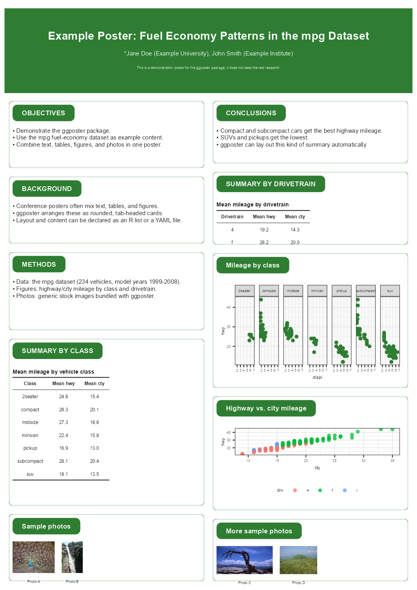

ggposter builds an A1 (or other true-size) conference poster from ggplot2. A poster is declared as a title band plus columns of rounded, tab-headed cards – text, tables, ggplot2 figures, or photo strips – assembled with patchwork and rendered at true size with embedded fonts, including CJK (Japanese). Content and layout can be written as an R list or a YAML file; figures, tables, and photos are supplied separately as R objects.
Installation
You can install the development version of ggposter from GitHub with:
# install.packages("remotes")
remotes::install_github("matutosi/ggposter")Example
The layout below follows a typical conference poster – a full-width title band and a two-column body of rounded, tab-headed cards for introduction/methods/summary on the left and results/conclusions on the right – filled in with the mpg fuel-economy dataset bundled with ggplot2. The title, author, and affiliation are placeholders.
library(ggposter)
library(ggplot2)
spec <- list(
title = list(
title = "Example Poster: Fuel Economy Patterns in the mpg Dataset",
authors = "*Jane Doe (Example University), John Smith (Example Institute)",
funding = "This is a demonstration poster for the ggposter package; it does not describe real research."
),
layout = list(
left = c("objectives", "background", "methods", "summary_table", "photos_1"),
right = c("conclusions", "results_table", "fig_facet", "fig_scatter", "photos_2")
),
sections = list(
objectives = list(header = "OBJECTIVES", height = 0.6, body = list(type = "text", md = c(
"- Demonstrate the ggposter package.",
"- Use the mpg fuel-economy dataset as example content.",
"- Combine text, tables, figures, and photos in one poster."
))),
background = list(header = "BACKGROUND", height = 0.6, body = list(type = "text", md = c(
"- Conference posters often mix text, tables, and figures.",
"- ggposter arranges these as rounded, tab-headed cards.",
"- Layout and content can be declared as an R list or a YAML file."
))),
methods = list(header = "METHODS", height = 0.7, body = list(type = "text", md = c(
"- Data: the mpg dataset (234 vehicles, model years 1999-2008).",
"- Figures: highway/city mileage by class and drivetrain.",
"- Photos: generic stock images bundled with ggposter."
))),
summary_table = list(header = "SUMMARY BY CLASS", height = 1.5,
body = list(type = "table", object = "tbl_class", title = "Mean mileage by vehicle class")),
photos_1 = list(header = "Sample photos", height = 0.6, body = list(
type = "image",
files = c("small.JPG", "tall.jpg"),
labels = c("Photo A", "Photo B"),
height = 45
)),
conclusions = list(header = "CONCLUSIONS", height = 0.6, body = list(type = "text", md = c(
"- Compact and subcompact cars get the best highway mileage.",
"- SUVs and pickups get the lowest.",
"- ggposter can lay out this kind of summary automatically."
))),
results_table = list(header = "SUMMARY BY DRIVETRAIN", height = 0.7,
body = list(type = "table", object = "tbl_drv", title = "Mean mileage by drivetrain")),
fig_facet = list(header = "Mileage by class", height = 1.3,
body = list(type = "figure", object = "fig_facet")),
fig_scatter = list(header = "Highway vs. city mileage", height = 1.1,
body = list(type = "figure", object = "fig_scatter")),
photos_2 = list(header = "More sample photos", height = 0.6, body = list(
type = "image",
files = c("wide.jpg", "large.JPG"),
labels = c("Photo C", "Photo D"),
height = 40
))
)
)
tbl_class <- aggregate(cbind(hwy, cty) ~ class, data = mpg, FUN = function(x) round(mean(x), 1))
names(tbl_class) <- c("Class", "Mean hwy", "Mean cty")
tbl_drv <- aggregate(cbind(hwy, cty) ~ drv, data = mpg, FUN = function(x) round(mean(x), 1))
names(tbl_drv) <- c("Drivetrain", "Mean hwy", "Mean cty")
fig_facet <- ggplot(mpg, aes(displ, hwy)) +
geom_point(colour = "#2E7D32") +
facet_wrap(~class, nrow = 1) +
theme_bw()
fig_scatter <- ggplot(mpg, aes(cty, hwy, colour = drv)) +
geom_point(alpha = 0.7) +
theme_bw() +
theme(legend.position = "bottom")
img_dir <- system.file("extdata", package = "ggposter")
p <- poster(
spec,
objects = list(tbl_class = tbl_class, tbl_drv = tbl_drv,
fig_facet = fig_facet, fig_scatter = fig_scatter),
theme = theme_green(base_size = 24),
base_dir = img_dir
)Rendering a poster at true size makes font sizes and spacing come out correctly proportioned; previewing it at an arbitrary plot size (as this README does) does not, so we render a scaled-down preview PNG instead of printing p directly:
render_poster(p, "man/figures/README-poster-preview.png", scale = 0.3, dpi = 150)
knitr::include_graphics("man/figures/README-poster-preview.png")
Save it at true size, with fonts embedded:
render_poster(p, "poster.pdf") # true A1 size
render_poster(p, "preview.png", scale = 0.25, dpi = 150) # A4-ish previewSee vignette("ggposter") for the full spec schema, theming, and a reproduction of a real conference poster.